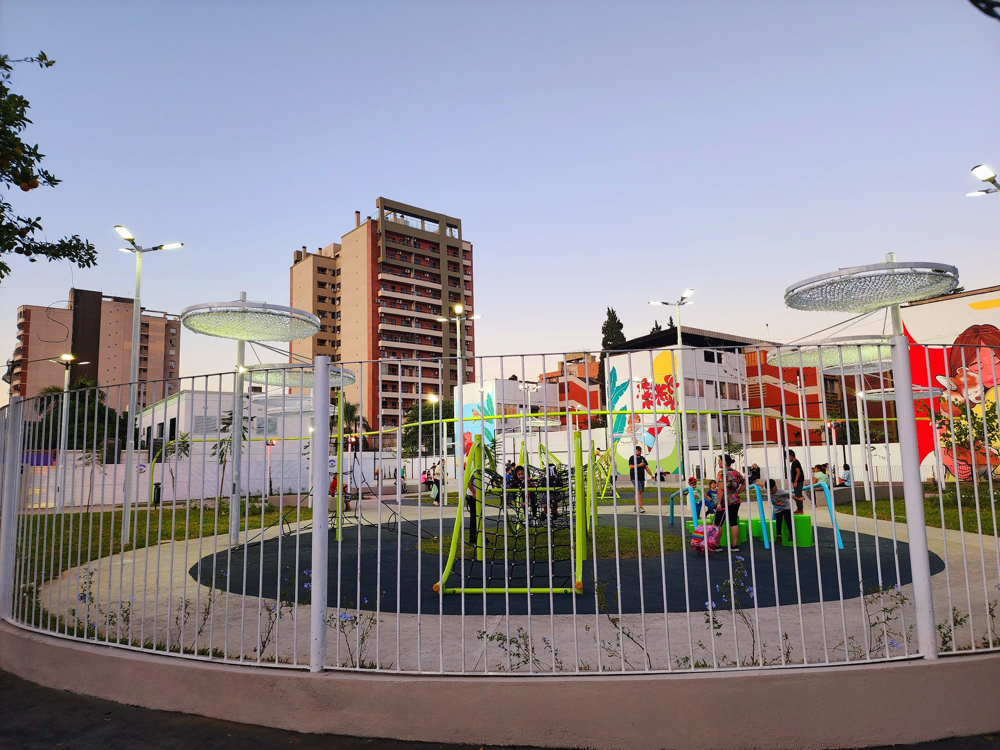

Formulario Espacios Verdes
Sección 1: Datos Generales
Fecha de Encuesta
Hora de Encuesta
¿Dónde vives?
Seleccione una opción
San Miguel de Tucumán
Banda del Río Salí
Tafí Viejo
Yerba Buena
Alderetes
San Pablo
Cebil Redondo
El Manantial
San Andrés
Otro
Nombre de la plaza sobre la que realizará la encuesta
Ubicaciòn de la plaza mas proxima a su residencia
Sección 2: Sobre Quien Responde
¿Qué edad tienes?
Seleccione una opción
Menor de 18 años
18 a 24 años
25 a 34 años
35 a 44 años
45 a 54 años
55 a 64 años
65 años o más
¿Cuál es tu género?
Seleccione una opción
Mujer
Hombre
No binario
¿Cuál es tu actividad principal?
Seleccione una opción
Estudiante
Ama de casa
Trabajador/a
Jubilado/a o pensionado/a
Desempleado/a
¿A qué distancia de tu vivienda se encuentra la plaza más cercana?
Seleccione una opción
Menos de 500 metros
De 500 metros a 1 kilómetro
Más de 1 kilómetro
Cómo llega a la plaza?
Seleccione una opción
A pie
En bicicleta
En motocicleta
En transporte publico
En automovil
¿Con qué frecuencia visita esta plaza?
Seleccione una opción
Todos los días
Varias veces a la semana
Una vez a la semana
Varias veces al mes
Una vez al mes
En promedio, ¿Cuánto tiempo permanece en la plaza?
Seleccione una opción
Menos de una hora
Entre una y dos horas
Más de una hora
¿Qué te lleva a pasar tiempo en la plaza? (Selecciona las opciones necesarias)
Estudiar o leer al aire libre
Pasear o caminar
Descansar y relajarse
Uso de juegos infantiles
Sección 3: Sobre la accesibilidad
¿Ha experimentado alguna dificultad para llegar a la plaza?
Seleccione una opción
Distancia excesiva desde su lugar de residencia
Falta de iluminación en los alrededores
Veredas rotas o en mal estado, escalones, otros obstáculos, etc.
Falta de transporte público cercano
Ninguna dificultad
¿Crees que esta plaza cumple con los parámetros mínimos de accesibilidad?
Seleccione una opción
Sí
No
Sección 4: Como te gustaría que sea tu plaza
¿Cuál de estas opciones de espacios verdes te parece más segura?
Imagen A: Plaza tradicional.
Imagen B: Bosque urbano.

Imagen C: Plaza cercada.
¿Cuál de estas opciones de diseño de plazas te gusta más?
Imagen A: Plaza seca, diseño geométrico, escasa actividad de usos internos.
Imagen B: Parque carbono neutral, diseño orgánico, diversidad de usos internos.
Imagen C: Bosque urbano, diseño regenerativo o co-diseño.
¿Cuál de estos tipos de plaza se adapta más a tus necesidades?
Imagen A: Plaza o bosque urbano contemplativo.
Imagen B: Plaza multifuncional.
Imagen C: Plaza diseñada y promovida según las necesidades ciudadanas, huertos urbanos.
¿Qué tipo de vegetación prefieres en una plaza?
Imagen A: Plaza con diversidad de vegetación principalmente exótica (no nativa).
Imagen B: Plaza con vegetación nativa.
Imagen C: Plaza con escasa sombra natural y presencia de agua (humedales).
Sección 5: Sobre infraestructura y servicios
¿Cómo califica el mantenimiento general de la plaza?
Seleccione una opción
Excelente
Bueno
Regular
Malo
Muy malo
¿Cuál es tu plaza o espacio verde preferido?
Enviar Encuesta